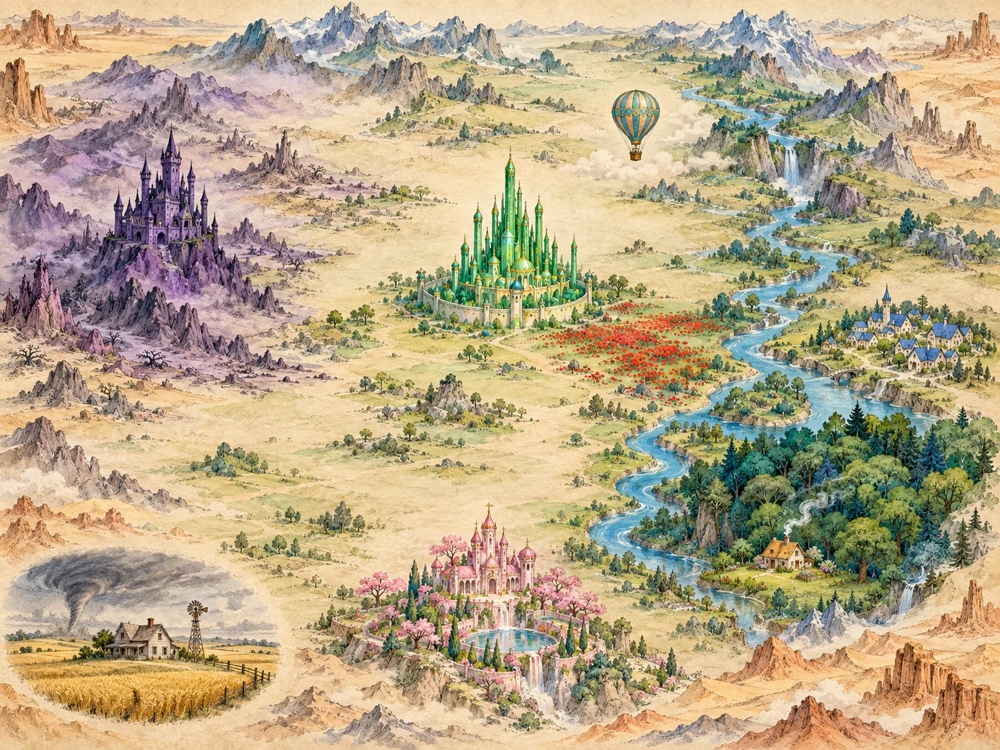

ONE JOURNEY · TWO STORYTELLERS
Two roads to Emerald City.
Follow the yellow road. Discover what changes when a story crosses a language.
Пройди по жёлтой дороге и узнай, как меняется история в литературной адаптации.
L. FRANK BAUM 1900ALEXANDER VOLKOV 1959 edition
THE JOURNEY MAP1 / 8 explored

Yellow brick roadEllie onlyOnward journey
Select a stop · drag to explore
An illustrated interpretation of both books. Terrain and distances are schematic; Kansas is a separate inset. The violet branch is Ellie’s ogre adventure. Stops 5 and 7 are two visits to the city.
THE BIG QUESTION
A translation — or a new story?
Compare names, causes and adventures. Then decide: how much can an author change while keeping a story recognisable?
Сравни имена, причины событий и приключения. Где заканчивается перевод и начинается самостоятельная адаптация?
SPEAK ABOUT IT IN ENGLISH
“Both stories…
However, in Volkov’s version…
This change suggests that…”